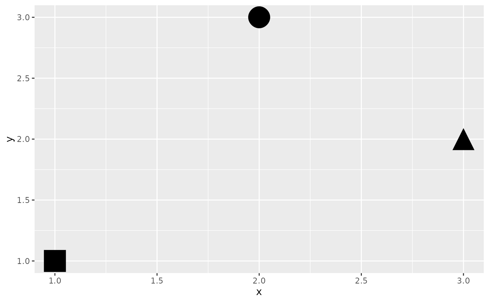

scale_icon_identity() is for the common case where the icon
aesthetic is already mapped to icon values (an icon vector from the
icons package), so the data
is passed through unchanged rather than looked up in a palette. No legend
is drawn by default, as with ggplot2::scale_shape_identity().
Usage
scale_icon_identity(
name = ggplot2::waiver(),
...,
guide = "none",
aesthetics = "icon"
)Arguments
- name
The name of the scale. Used as the axis or legend title. If
waiver(), the default, the name of the scale is taken from the first mapping used for that aesthetic. IfNULL, the legend title will be omitted.- ...
Other arguments passed on to
discrete_scale()orcontinuous_scale()- guide
Guide to use for this scale. Defaults to
"none".- aesthetics
Character string(s) naming the aesthetic(s) this scale works with, defaulting to
"icon".
Details
Requesting a legend (guide = "legend") isn't supported here: ggplot2's
discrete scale training only recognises character/factor data, not icon
vectors. Use scale_icon_manual() instead when a legend is needed.
Examples
library(ggplot2)
# bundled placeholder shapes; a real pack (e.g. icons::fontawesome) works the same
shapes <- icons::icon_set(system.file("icons", package = "ggicons"))
df <- data.frame(
x = 1:3, y = c(1, 3, 2),
icon = c(shapes$square, shapes$circle, shapes$triangle)
)
# applied automatically for an icon-vector aesthetic; shown explicitly here
ggplot(df, aes(x, y, icon = icon)) +
geom_icon(size = 10) +
scale_icon_identity()
